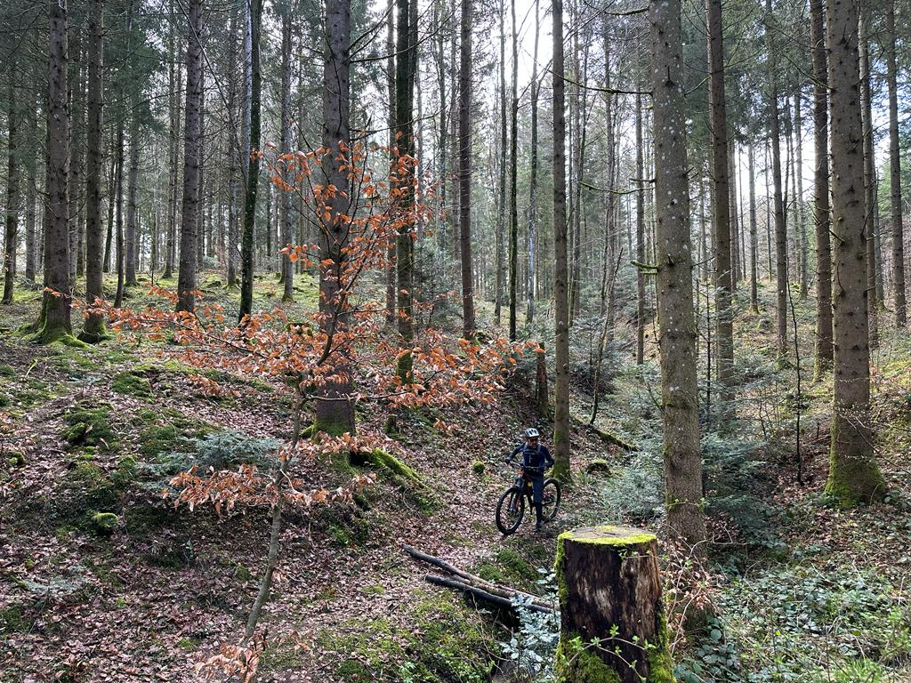
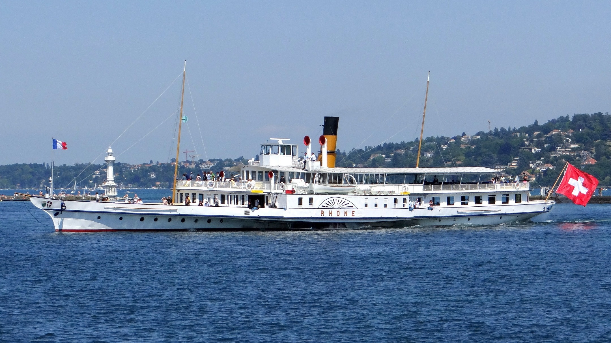
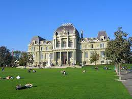
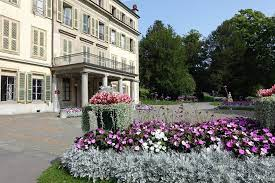
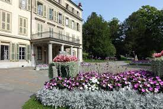
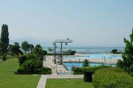
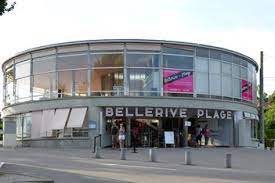

Lausanne est une ville regorgeant d'activités. Nous vous avons trouvés quelques une.
Plongez dans l'histoire du Lausanne Hockey Club (LHC) pour un match mémorable. Depuis sa création en 1922, le LHC a tracé un parcours riche en exploits, rivalités et victoires inoubliables. Rejoignez-nous à la Vaudoise aréna pour une expérience immersive où l'énergie des supporteurs, l'excitation du hockey de haut niveau et l'histoire en marche se rencontrent. Préparez-vous à vivre une soirée exceptionnelle, où chaque instant sur la glace résonne avec la passion du LHC et du hockey. Le calendrier est disponible sur leur site internet. Les billets sont diponible sur la billettrie en ligne.Pour toute autre information le site internet est disponible
Explorez les sentiers de la forêt du Jorat, découvrez ses merveilles naturelles. Que vous aimiez marcher ou cherchiez simplement la paix, la forêt du Jorat vous attend pour une escapade. Préparez-vous à passer des moments formidables au cœur de cette nature préservée.
Plan d'accès en transport public
A bord des bateaux Belle Époque de la CGN embarquez pour une croisière sur le lac Léman. Plongez dans l'élégance du passé tout en savourant les panoramas saisissants des Alpes suisses et françaises. Cette expérience unique allie le charme historique de ces navires emblématiques à la beauté de la nature lémanique. Préparez-vous à vivre un moment hors du temps durant cette balade sur l'eau.
Plongez dans une expérience de chasse au trésor moderne, résolvez des énigmes et découvrez la ville d'une manière ludique et unique. Que vous soyez amateur d'énigmes ou simplement en quête d'amusement, le Foxtrail à Lausanne vous promet une journée passionnante à explorer la ville. Prêt à relever le défi ?
Découvrez l'esplanade de Montbenon , un joyau au cœur de Lausanne, offrant un cadre spectaculaire pour une multitude d'activités culturelles et récréatives. Plongez dans son ambiance vibrante et laissez-vous séduire par son charme incomparable. Bienvenue dans un lieu où chaque moment est une expérience à savourer.

Découvrez Parc de Mon Repos, un havre de paix au cœur de Lausanne, aux origines remontant au 18ᵉ siècle. Jadis domaine privé, il est désormais ouvert au public, offrant un cadre verdoyant pour se détendre et se promener. Venez explorer son histoire et sa beauté naturelle lors d'une escapade inoubliable.
 

Il y a même une piscine! En effet, venez vous baignez en été. Cette piscine se trouvent au bord du lac. Il y a plusieurs bassins plus ou moins profond (selon les âges et les envies), des plongeoires, un terrain de beachvolley, et une buvette. Il est aussi possible de se baigner dans le lac.
 